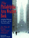

|

|
Rebuilding the News
Metropolitan Journalism in the Digital Age
Anderson, C.W.
International Communications Association Journalism Studies Division Book Award, 2017
|

|
St. Peter's Church
Faith in Action for 250 Years
Biddle, Cordelia Frances, Elizabeth S. Browne, Alan J. Heavens and Charles P. Peitz
Laurence D. Fish Award for Outstanding Parish History from the National Episcopal Historians and Archivists, 2014 |

|
More Philadelphia
Murals and the Stories They Tell
Golden, Jane, Robin Rice and Natalie Pompilio, photographs by David Graham and
Jack Ramsdale
Second prize winner of 2006 UCF Jane Jacobs Publication Award |

|
Philadelphia
Murals and the Stories They Tell
Golden,
Jane, Robin Rice and Monica Yant Kinney, photographs by David
Graham and Jack Ramsdale
Athenæum of Philadelphia’s Literary Award, 2004 |

|
I Walked with Giants
The Autobiography of Jimmy Heath
Heath, Jimmy and Joseph McLaren, foreword by Bill Cosby, introduction by Wynton Marsalis
Best Book of the Year from the Jazz Journalists Association, 2011 |

|
Whisper Not
The Autobiography of Benny Golson
Golson, Benny and Jim Merod Association for Recorded Sound Collections' award for Best History Book in the category of Best Historical Research in Recorded Jazz, 2017
One of the Best Jazz books of 2017 by New York City Jazz Record
|

|
Dr. Radway's Sarsaparilla Resolvent
Kephart, Beth
Kirkus Reviews' Best in Children's Books,
2013
Parrott Library Award from the St. Albans School Library, 2014 |

|
A Guide to the Great Gardens of the Philadelphia Region
text by Levine, Adam, photographs by Rob Cardillo
Silver Award of Achievement for book photography in the Garden Writers Association Media Awards Program, 2008 |

|
Philadelphia's
Cultural Landscape
The Sartain Family Legacy
edited
by Martinez, Katharine and Page Talbott
The Ewell L. Newman Book Award from the American Historical
Print Collectors Society for the outstanding publication enhancing
appreciation of American prints before 1900, 2001 |

|
The
Philadelphia Area Weather Book
Nese,
Jon and Glenn "Hurricane" Schwartz, foreword by Edward G. Rendell
Winner of the Louis J. Battan Author's Award from The American
Meteorological Society, 2005 |
|